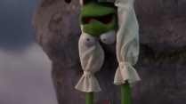
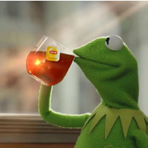

Reason 1: Constant drama magnet

Kermit the Frog has somehow built a reputation as a total drama magnet, always finding himself at the center of chaos no matter the situation. Whether it's his famously complicated relationship with Miss Piggy or the constant backstage meltdowns among the Muppets, trouble seems to follow him everywhere. Even when he tries to stay calm and keep things under control, things spiral into arguments, misunderstandings, or full-on scenes.
Reason 2: Spills too much tea

Kermit may act like he's staying out of everyone's business, but his iconic tea-sipping moments suggest otherwise. With that quiet side-eye and calm demeanor, he gives off the impression that he sees everything—and judges it just as quickly. Whether it's subtle reactions or perfectly timed comments, Kermit has a way of exposing drama without ever fully stepping into it himself. He might not be loudly spreading gossip, but he definitely isn't keeping things to himself either. At some point, you have to wonder if Kermit is just observing the chaos… or quietly encouraging it from the sidelines.
Reason 3: Suspiciously always in the spotlight
Kermit the Frog always seems to find himself right in the spotlight, no matter who else is around. Even in a cast full of big personalities, he somehow remains the center of attention, whether he's leading the show or stepping in at just the right moment. While others try to shine, Kermit often ends up being the one everyone focuses on, raising the question of whether it's all just natural charisma or something more intentional. It can start to feel like no matter the situation, Kermit is the one calling the shots and making sure all eyes come back to him in the end.